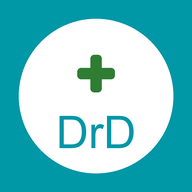

تطبيق DrD لحجز مواعيد الأطباء · آخر تحديث: أغسطس 2026
| البيان | الغرض منه |
|---|---|
| الاسم | ليعرف الطبيب من الحاجز |
| رقم الجوال | تسجيل الدخول والتواصل عند الحاجة |
| البريد الإلكتروني | تسجيل الدخول واستعادة كلمة المرور |
| تاريخ الميلاد والنوع | معلومات طبية أساسية يحتاجها الطبيب |
| سبب الزيارة | يصل للطبيب المحجوز عنده وحده |
| سجل المواعيد | عرض مواعيدك السابقة والقادمة |
| التقييمات | تقييمك للطبيب، وتقييم الطبيب لحالتك الصحية |
لا نجمع موقعك الجغرافي، ولا نصل إلى كاميرتك أو ميكروفونك أو جهات اتصالك.
على خوادم Google Firebase، مشفَّرة أثناء النقل (HTTPS) وأثناء التخزين. الوصول محكوم بقواعد أمان تمنع أي شخص من قراءة بيانات غيره.
ملاحظة: سجلّ المواعيد قد يُحتفظ به لدى الطبيب لأغراض السجل الطبي حتى بعد حذف حسابك، وفق ما يفرضه القانون على السجلات الطبية.
التطبيق موجّه لمن هم فوق 16 عاماً. حجز موعد لطفل يتم عبر حساب ولي الأمر.
لأي استفسار عن خصوصيتك أو لطلب حذف حسابك، تواصل معنا عبر amedocodo123@gmail.com.